Inhalt Index DeskTop Bronstein

 Computeralgebrasysteme Mathematica Zahlenarten in Mathematica
Computeralgebrasysteme Mathematica Zahlenarten in Mathematica


In Mathematica sind einige spezielle Zahlen enthalten, die häufig benötigt werden und mit beliebiger Genauigkeit aufgerufen werden können. Dazu gehören  mit dem Symbol 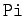, e mit dem Symbol 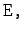 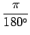 als Umrechnungsfaktor von Gradmaß in Bogenmaß mit dem Symbol 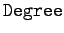, 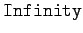 als Symbol für
mit dem Symbol 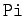, e mit dem Symbol 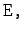 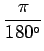 als Umrechnungsfaktor von Gradmaß in Bogenmaß mit dem Symbol 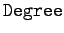, 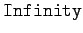 als Symbol für  sowie die schon benutzte imaginäre Einheit 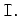
sowie die schon benutzte imaginäre Einheit 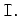